Applicazione del criterio di stabilità di Nyquist nei sistemi di controllo
Revisione del criterio di stabilità di Nyquist
Prima di approfondire l’applicazione del criterio di stabilità di Nyquist nei sistemi di controllo, è essenziale rivisitare il concetto fondamentale del criterio. Il criterio di stabilità di Nyquist è un metodo grafico utilizzato nell’ingegneria di controllo per valutare la stabilità di un sistema a circuito chiuso.
Il contorno di Nyquist
Il criterio di Nyquist ruota attorno ad un contorno specifico nel piano complesso, noto come contorno di Nyquist. Nel piano s (dominio di Laplace), questo contorno comprende l’intero semipiano destro, compreso l’asse immaginario.
Contorno Nyquist: il contorno è rappresentato matematicamente come un semicerchio con un raggio infinito nel semipiano destro, che si estende da \(+j\infty\) a \(-j\infty\).
Rappresentazione di \(s\): Qualsiasi punto su questo semicerchio è rappresentato come \(s = R e^(j\theta)\), dove \(R\rightarrow \infty\) e \(\theta\) varia da +90° a -90°.
| 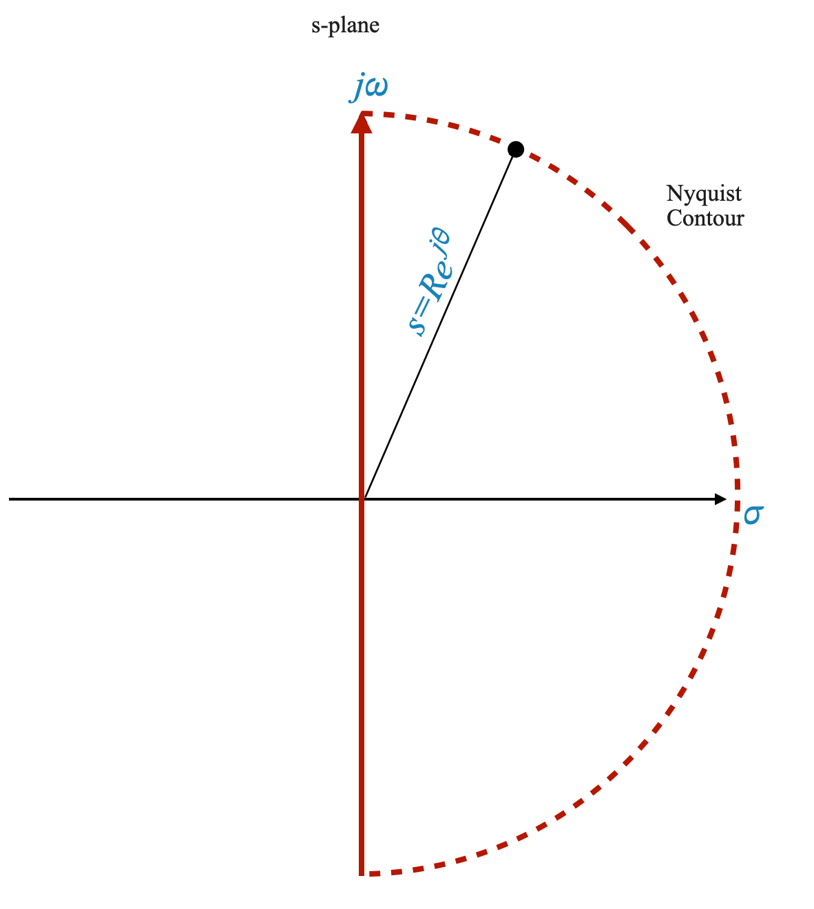 |
Il concetto di mappatura
Quando applichiamo il criterio di Nyquist, ci concentriamo su come questo contorno si mappa nel piano \(G(s)H(s)\), dove \(G(s)H(s)\) rappresenta la funzione di trasferimento ad anello aperto del sistema.
Comprendere la natura fisica di G(s)H(s)
- Realizzabilità: \(G(s)H(s)\) è una funzione di trasferimento fisicamente realizzabile.
\[ G(s)H(s) = \frac{N(s)}{\Delta(s)} \]
- Ordine dei polinomi: Generalmente, l’ordine del polinomio del numeratore \(N(s)\) è inferiore o uguale all’ordine del polinomio del denominatore \(\Delta(s)\).
Mappatura del contorno di Nyquist
Premesso che il contorno di Nyquist può essere pensato composto da due parti principali:
- L’asse immaginario, cioè la linea \(j\omega\), con \(\omega \in [-\infty, +\infty]\)
- Il resto del contorno, cioè la parte che inizia a \(+\infty\) sull’asse immaginario, fa tutto il giro per arrivare a \(+\infty\) sull’asse reale e poi ritorna a \(-\infty\) sull’asse immaginario
Diventa particolarmente importante comprendere il comportamento della mappatura quando \(R\rightarrow \infty\).
Raggio infinito: quando \(R\rightarrow \infty\), l’intero semicerchio nel piano s viene mappato su un singolo punto nel piano \(G(s)H(s)\).
Condizione: Se l’ordine di \(N(s)\) è inferiore a \(\Delta(s)\), questo punto è l’origine. Se sono uguali, viene mappato su un punto costante sull’asse reale.
Sistemi strettamente adeguati
Approfondiamo ora i dettagli della funzione di trasferimento ad anello aperto $ G(s)H(s) $ e il suo comportamento, soprattutto nei punti tendenti all’infinito nel piano s.
Consideriamo la funzione di trasferimento ad anello aperto espressa come:
\[ G(s)H(s) = \frac{N(s)}{\Delta(s)} \]
Qui, $ N(s) $ e $ (s) $ sono rispettivamente i polinomi del numeratore e del denominatore, con l’ordine di $ N(s) $ (indicato come $ m $) inferiore all’ordine di $ (s)$. Lo denotiamo come $ [N(s)] = m < [(s)] $. Per la nostra analisi, esaminiamo i punti sul contorno di Nyquist, rappresentati come $ s = R e^{j} $, dove $ R $.
Quando esploriamo il comportamento di $ G(s)H(s) $ nel piano W, possiamo scomporlo in due componenti: fase e guadagno.
Fase nel piano W
La fase di $ G(s)H(s) $ nel piano W può essere determinata dai contributi angolari dei suoi zeri e poli:
\[ \angle G(s)H(s) = \sum \angle \text{zeri} - \sum \angle \text{poli} \]
Questo angolo di fase è la somma degli angoli di tutti gli zeri meno la somma degli angoli di tutti i poli di $ G(s)H(s) $.
Guadagno nel piano W
L’entità del guadagno di $ G(s)H(s) $ nel piano W è data da:
\[ | G(s)H(s) | = \frac{K \prod | \text{zeri} |}{\prod |\text{poli}|} \]
Qui, $ K $ rappresenta qualsiasi moltiplicatore costante nella funzione di trasferimento. Il guadagno viene calcolato come il prodotto delle magnitudini degli zeri diviso per il prodotto delle magnitudini dei poli.
Comportamento all’infinito
Per i punti sul contorno di Nyquist dove $ R $, il guadagno di $ G(s)H(s) $ si avvicina a zero. Ciò si verifica perché il numero di poli supera il numero di zeri, portando alla divisione per un valore infinitamente grande all’aumentare di $ R $.
Di conseguenza, qualsiasi punto sul contorno di Nyquist, poiché $ R $ tende all’infinito, corrisponde all’origine nel piano W. Sebbene l’angolo di fase di $ G(s)H(s) $ vari mentre il punto $ s $ si muove lungo il contorno, non influenza in modo significativo la posizione della mappatura nel piano W, poiché il guadagno si avvicina a zero e il punto costantemente mappe all’origine.
Sistemi adeguati
Quando gli ordini dei polinomi del numeratore e del denominatore in una funzione di trasferimento ad anello aperto $ G(s)H(s) $ sono uguali, indicati come $ m = n $, il comportamento della funzione di trasferimento, in particolare nei punti che si avvicinano all’infinito su il contorno di Nyquist, è distinto dal caso in cui $ m < n $.
Consideriamo la funzione di trasferimento ad anello aperto:
\[ G(s)H(s) = \frac{N(s)}{\Delta(s)} \]
In questo scenario, dove $ m = n $, l’ordine del polinomio al numeratore $ N(s) $ è uguale all’ordine del polinomio al denominatore $ (s) $. Ciò implica che $ G(s)H(s) $ ha un numero uguale di zeri e poli in termini di ordine.
Comportamento nel piano W
Guadagno all’infinito: Quando $ s = R e^{j} $ e $ R $, a differenza del caso $ m < n $, il guadagno $ |G(s)H (s)| $ non tende a zero. Questo perché gli infiniti nel numeratore e nel denominatore si annullano effettivamente, lasciando un valore finito.
Angolo di fase: L’angolo di fase $ G(s)H(s) $ è determinato dai contributi angolari degli zeri e dei poli, simile al caso $ m < n $. Tuttavia, poiché esiste un numero uguale di zeri e poli (in termini di ordine), i loro contributi angolari potrebbero bilanciarsi in modo diverso.
Mappatura sul piano W
- Mappatura all’infinito: per i punti all’infinito sul contorno di Nyquist, $ G(s)H(s) $ mappa su un punto costante sul piano W. La posizione esatta di questo punto dipende dai valori specifici e dalla distribuzione degli zeri e dei poli della funzione di trasferimento.
Attraversando il contorno di Nyquist
Chiariamo il concetto di mappatura del contorno di Nyquist nei sistemi di controllo. Questo processo implica tracciare un percorso specifico nel piano complesso, partendo da un certo punto e procedendo attraverso luoghi chiave.
Mentre esegui i passaggi seguenti, utilizza il diagramma seguente come riferimento.
Punto iniziale: la mappatura inizia all’origine del piano s, dove \(\omega = 0\). Questo è indicato come \(\omega = 0^+\).
Percorso lungo l’asse immaginario: Dall’origine, il percorso si estende lungo l’asse immaginario del piano s. Ciò significa che lasciamo \(s = j\omega\) e \(\omega\) aumenta da 0 a infinito. Questo segmento è spesso descritto come \(\omega = 0^+\) to \(\omega = +\infty\).
Semicerchio infinito: il contorno passa quindi attraverso un semicerchio infinito nel semipiano destro. Questo è concettualizzato come \(\omega\) che passa da \(+\infty\) a \(-\infty\). Durante questa transizione, il raggio del semicerchio (\(R\)) tende all’infinito.
Completamento del contorno: Infine, il percorso ritorna all’origine lungo l’asse immaginario negativo. Questo è descritto come \(\omega\) che si sposta da \(-\infty\) a \(0\), indicato come \(\omega = 0^-\).
Simmetria e semplificazione: il segmento da \(\omega = 0\) a \(\omega = +\infty\) è un’immagine speculare del segmento da \(\omega = -\infty\) a $= 0 $. A causa di questa simmetria, il grafico di Nyquist viene spesso semplificato per considerare solo la prima metà del contorno (da \(\omega = 0^+\) a \(\omega = +\infty\)). La seconda metà è semplicemente una riflessione sull’asse reale.
Importanza nell’analisi della stabilità: l’intero contorno di Nyquist comprende la metà destra del piano s. Il criterio di Nyquist utilizza questo contorno per determinare se ci sono poli a circuito chiuso (zeri di \(1 + G(s)H(s)\)) nel semipiano destro, che indicano l’instabilità del sistema.
Tecnica in pratica: Sebbene questa spiegazione delinei l’approccio teorico, nella mappatura pratica, l’attenzione è spesso sul segmento dell’asse immaginario e sul comportamento all’infinito. La simmetria del diagramma semplifica l’analisi, rendendola più gestibile e approfondita.
In sintesi, la mappatura effettiva del contorno di Nyquist implica tracciare un percorso dall’origine lungo l’asse immaginario fino all’infinito, attorno a un semicerchio infinito, e ritorno all’origine. Questa mappatura è cruciale nell’applicazione del criterio di Nyquist per valutare la stabilità dei sistemi di controllo.
| 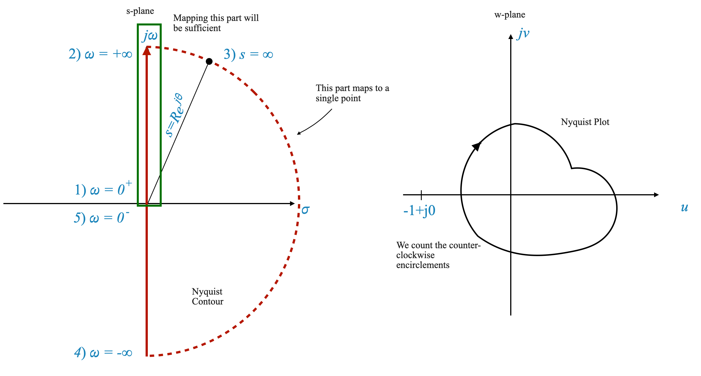 |
Figura: Nyquist Countour e Nyquist Plot. In questo caso il sistema in CL è stabile anche se non conosciamo P.
Analisi del criterio di stabilità di Nyquist attraverso la mappatura di G(s)H(s) sul contorno di Nyquist
Mappatura della funzione di trasferimento: Il compito da svolgere è mappare $ G(s)H(s) $ mentre la variabile complessa $ s $ attraversa il contorno di Nyquist. Questo viaggio lungo il contorno creerà un diagramma nel piano \(G(s)H(s)\).
Creazione del grafico di Nyquist: Mentre $ s $ si muove lungo il contorno di Nyquist, osserviamo come cambia il valore di $ G(s)H(s) $. Il grafico risultante nel piano \(G(s)H(s)\) è il nostro obiettivo principale.
Natura qualitativa del terreno: Sebbene gli esatti valori quantitativi del terreno non siano la nostra principale preoccupazione, la sua forma qualitativa è cruciale. L’asse reale e l’asse immaginario del piano \(G(s)H(s)\) sono punti di riferimento importanti per la nostra analisi.
Punto cruciale nel diagramma: Un elemento chiave nel diagramma di Nyquist è il punto \(-1 + j0\). Questo punto è fondamentale perché abbiamo spostato la nostra prospettiva da \(1 + G(s)H(s)\) a solo \(G(s)H(s)\).
Conteggio degli accerchiamenti: L’essenza del criterio sta nel contare il numero di accerchiamenti in senso antiorario del punto \(-1 + j0\) mediante il diagramma di Nyquist. Questo conteggio è indicato con \(N\).
Il criterio di stabilità di Nyquist: il numero totale di accerchiamenti in senso antiorario, \(N\), è correlato a due variabili chiave: \(P\) e \(Z\). Qui, \(N = P - Z\), dove \(P\) rappresenta il numero di poli ad anello aperto all’interno della regione di Nyquist e \(Z\) corrisponde al numero di zeri, che equivale al numero di poli ad anello chiuso nella regione sistema.
In sintesi, il criterio di stabilità di Nyquist ruota attorno alla mappatura di $ G(s)H(s) $ lungo il contorno di Nyquist e all’analisi del grafico risultante, concentrandosi in particolare sul numero di accerchiamenti in senso antiorario attorno al punto critico \(-1 + j0\) . Questa analisi è fondamentale per determinare la stabilità del sistema di controllo in esame.
Esempi

|

|
Esempi pratici
Per rafforzare questi concetti analizziamo alcuni esempi:
Esempio 1: sistema in feedback con funzione di trasferimento ad anello aperto
Considera un sistema in feedback con
\[ G(s)H(s) = \frac{1}{(T_1 s + 1)(T_2 s + 1)} \]
Nel campo dell’analisi nel dominio della frequenza, la forma della costante di tempo di una funzione di trasferimento è tipicamente più pratica e facile da usare.
Questo approccio contrasta con la Forma Zero-Pole utilizzata nel metodo del luogo delle radici. Per illustrare, si consideri la seguente forma a polo zero della funzione di trasferimento ad anello aperto ( G(s)H(s) ):
\[ G(s)H(s) = \frac{1}{(s + p_1)(s + p_2)} \]
In questa forma, la funzione di trasferimento è esplicitamente espressa in termini di poli (e zeri, se presenti). Ciò è particolarmente utile per il metodo del luogo delle radici, dove i punti di partenza (poli e zeri) sono fondamentali per costruire il luogo delle radici.
Tuttavia, per l’analisi della risposta in frequenza, la forma della costante di tempo offre una comprensione più diretta e intuitiva del comportamento del sistema. Questa forma semplifica il processo di calcolo della risposta in ampiezza e fase del sistema, che sono cruciali nei metodi nel dominio della frequenza.
La conversione tra queste due forme, da Zero-Pole a Time Constant o viceversa, è semplice. Implica la riorganizzazione della funzione di trasferimento nel formato desiderato, garantendo che le caratteristiche essenziali del sistema, come i poli, gli zeri e il guadagno, rimangano coerenti in entrambe le rappresentazioni.
Quando ci viene presentata una funzione di trasferimento in forma di costante di tempo, la trasformiamo nel suo equivalente sinusoidale ponendo $ s = j$:
\[ G(j\omega)H(j\omega) = \frac{1}{(1 + j\omega T_1)(1 + j\omega T_2)} \]
Questa forma della funzione di trasferimento caratterizza la risposta del sistema agli ingressi sinusoidali.
Motivazione alla base della funzione di trasferimento sinusoidale L’obiettivo principale è mappare l’intero contorno di Nyquist. Un’osservazione fondamentale è che il segmento più importante di questo contorno è la metà positiva dell’asse immaginario. Una volta mappato questo segmento, il resto della mappatura diventa relativamente semplice, poiché questo segmento riflette la risposta in frequenza del sistema ad anello aperto.
Collegamento della risposta in frequenza con Nyquist Contour
Risposta in frequenza: definita come l’uscita del sistema quando esposto a ingressi sinusoidali, con frequenze che vanno da $ = 0 $ a $ = $.
Mappatura sul contorno di Nyquist: mappare la metà positiva dell’asse immaginario nel piano s equivale effettivamente ad analizzare la risposta in frequenza del sistema a circuito aperto.
In questo contesto, la funzione di trasferimento sinusoidale $ G(j)H(j) $ subisce una trasformazione corrispondente alla sostituzione $ s = j$:
\[ G(j\omega)H(j\omega) \xrightarrow{s = j\omega} G(s)H(s) \]
La grandezza e la fase di questa funzione sono rappresentate da $ |G(j)H(j)| $ e $ G(j)H(j) $, rispettivamente.
Ampiezza $ |G(j)H(j)| $: quantifica il rapporto di ampiezza del sistema ad anello aperto in risposta a un ingresso sinusoidale.
Angolo di fase $ G(j)H(j) $: indica la variazione dell’angolo di fase dell’ingresso sinusoidale elaborato dal sistema ad anello aperto.
Conoscere questi due parametri per ogni data frequenza ci permette di comprendere l’uscita del sistema quando incontra un ingresso sinusoidale.
Questa analisi rivela che $ G(j)H(j) $ rappresenta essenzialmente la risposta in frequenza del sistema a circuito aperto. Inoltre, anche se la forma analitica di $ G(s)H(s) $ non è disponibile, è possibile determinare sperimentalmente queste grandezze e angoli di fase, consentendo l’applicazione del criterio di Nyquist utilizzando dati sperimentali.
Domanda pop-up: Perché la mappatura della metà positiva dell’asse immaginario è importante nell’analisi di Nyquist?
Risposta: questa mappatura corrisponde alla risposta in frequenza del sistema ad anello aperto, fornendo informazioni critiche sulle caratteristiche di stabilità del sistema.
Come disegnare qualitativamente il diagramma di Nyquist
Le seguenti linee guida, basate sull’esperienza pratica, delineano quattro punti critici necessari per disegnare qualitativamente il diagramma di Nyquist. Questi punti sono particolarmente rilevanti per valutare la stabilità dei sistemi di controllo.
Individuazione di quattro punti chiave
- Grandezza e angolo a $ = 0 $
- Grandezza e angolo a $ = $
- Intersezione con l’asse immaginario
- Intersezione con l’asse reale
Questi punti forniscono una visione completa della risposta del sistema e sono generalmente sufficienti per uno schizzo approssimativo del diagramma di Nyquist, soprattutto quando la preoccupazione principale è la stabilità del sistema.
Esame dettagliato di ciascun punto per il nostro esempio
1. Grandezza e angolo a $ = 0 $
- Per la data funzione di trasferimento sinusoidale
\[ G(j\omega)H(j\omega) = \frac{1}{(1 + j\omega T_1)(1 + j\omega T_2)} \]
a $ = 0 $, la grandezza è 1 e l’angolo è 0 gradi.
Questo ci dà il nostro primo punto critico sul diagramma di Nyquist:
\[ 1\angle{0^\circ}\;\;\; \omega=0 \]
2. Grandezza e angolo a $ = $
- Quando $ $ si avvicina all’infinito, la grandezza si avvicina a zero e l’angolo tende a -180 gradi. Questo comportamento è cruciale per comprendere come si comporta il diagramma alle alte frequenze.
Poiché $ = $ possiamo approssimare:
\[ G(j\omega)H(j\omega) = \frac{1}{(1 + j\omega T_1)(1 + j\omega T_2)} = \frac{1}{j^2\omega ^2T_1T_2}\]
Adesso calcoliamo:
\[ \lim_{\omega = \rightarrow \infty} \frac{1}{j^2\omega^2T_1T_2} \]
ottenere:
\[ 0\angle{-180^\circ}\;\;\; \omega=\infty \]
BARRA LATERALE - Calcolo del limite
Per capire perché
\[ \lim_{\omega \rightarrow \infty} \frac{1}{j^2\omega^2T_1T_2} = 0\angle{-180^\circ} \]
dobbiamo analizzare sia la grandezza che l’angolo di fase dell’espressione complessa quando \(\omega\) si avvicina all’infinito.
Analisi della magnitudo
Semplificazione dell’espressione: l’espressione data è \(\frac{1}{j^2\omega^2T_1T_2}\). Innanzitutto, semplifichiamo \(j^2\). Poiché \(j\) è l’unità immaginaria, \(j^2 = -1\). Pertanto, l’espressione diventa \(\frac{1}{-1\cdot\omega^2T_1T_2}\) o \(-\frac{1}{\omega^2T_1T_2}\).
La grandezza quando \(\omega\) si avvicina all’infinito: Quando \(\omega\) diventa molto grande, anche il denominatore \(\omega^2T_1T_2\) diventa molto grande. La grandezza di una frazione con un denominatore molto grande si avvicina allo zero. Quindi \(\lim_{\omega \rightarrow \infty} \left| -\frac{1}{\omega^2T_1T_2} \right| = 0\).
Analisi dell’angolo di fase
Fase dell’espressione originale: nell’espressione originale \(\frac{1}{j^2\omega^2T_1T_2}\), il termine \(j^2\) contribuisce alla fase. Poiché \(j^2 = -1\), può essere visto come avente una fase di \(180^\circ\) (o \(-180^\circ\), poiché uno sfasamento di \(180^\circ\) equivale a \(-180 ^\circ\)).
Fase all’infinito: la fase di un numero complesso non è influenzata dalla grandezza del numero. Anche se la magnitudo va a zero, l’angolo di fase contribuito da \(j^2\) rimane a \(-180^\circ\).
Combinando le analisi di magnitudo e fase:
- La grandezza di \(\frac{1}{j^2\omega^2T_1T_2}\) si avvicina a zero quando \(\omega\) si avvicina all’infinito.
- L’angolo di fase rimane a \(-180^\circ\) a causa del contributo di \(j^2\).
Pertanto, concludiamo che:
\[ \lim_{\omega \rightarrow \infty} \frac{1}{j^2\omega^2T_1T_2} = 0\angle{-180^\circ} \]
Ciò indica che a frequenze molto elevate (\(\omega \rightarrow \infty\)), la risposta di un sistema descritto da questa funzione di trasferimento diminuisce fino a zero in grandezza, con uno sfasamento di \(-180^\circ\).
FINE DELLA BARRA LATERALE
Intersezioni con assi reali e immaginari
Per trovare le intersezioni della funzione di trasferimento con gli assi reale e immaginario, possiamo esprimere la funzione di trasferimento nella forma di $ x + jy $:
\[ G(s)H(s) = \frac{1}{(1 + j\omega T_1)(1 + j\omega T_2)} = x + jy \]
e quindi analizzarlo per condizioni specifiche:
Intersezione con l’asse reale: imposta la parte immaginaria, $ y $, su zero e risolvi $ $ per trovare dove la funzione di trasferimento interseca l’asse reale.
Intersezione con l’asse immaginario: imposta la parte reale, $ x $, su zero per determinare i punti di intersezione con l’asse immaginario.
Costruzione del diagramma polare della risposta in frequenza
Il diagramma polare
Prima di immergerci nel diagramma di Nyquist, creiamo innanzitutto un diagramma polare della risposta in frequenza del sistema a circuito aperto. Questo grafico inizia da $ = 0 $ e si estende fino a $ = $.
Usiamo i punti che abbiamo calcolato prima:
| \(\omega = 0\) | \(1\angle{0^\circ}\) |
| \(\omega = \infty\) | \(0\angle{-180^\circ}\) |
e disegniamo il diagramma:

|
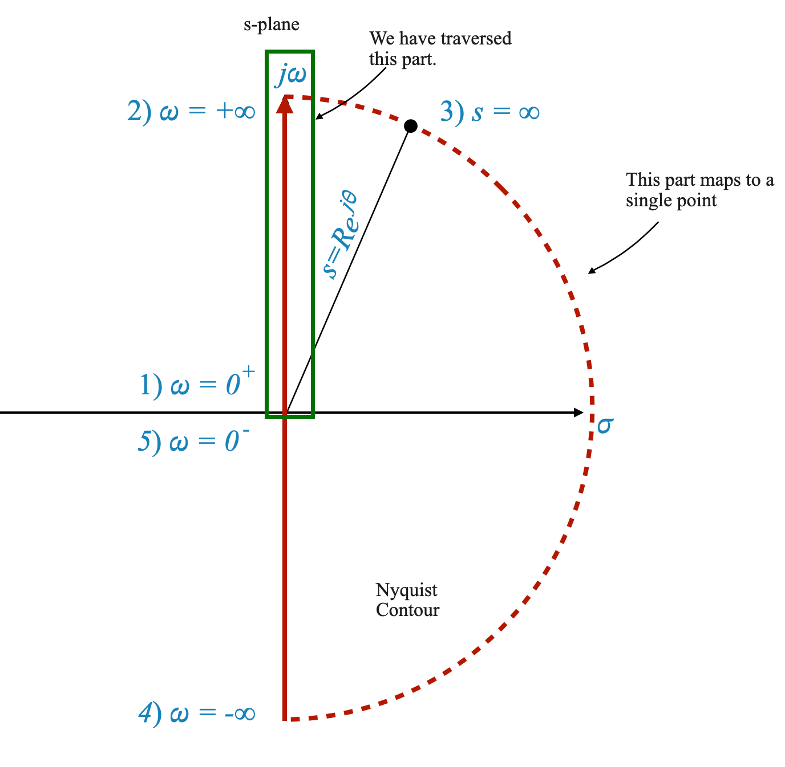 |
Punti chiave dell’analisi
- Omega = 0: A $ = 0 $, la grandezza è 1 e l’angolo è 0 gradi.
- Omega = Infinito: Quando $ $ si avvicina all’infinito, la grandezza tende verso zero e l’angolo si avvicina a -180 gradi.
Infine dobbiamo capire come mappare il punto:
\[ s = Re^{j\theta} \]
Per questo considereremo la funzione originale \(G(s)H(s)\). Abbiamo utilizzato la funzione di trasferimento sinusoidale solo per mappare l’asse immaginario.
\[ G(s)H(s) = \frac{1}{(T_1 s + 1)(T_2 s + 1)} \]
In questo caso:
\[ G(s)H(s)\Big|_{s = Re^{j\theta}} = \frac{1}{(T_1 Re^{j\theta} + 1)(T_2 Re^{j\theta } + 1)} \]
Quando \(R \rightarrow \infty\), la funzione diventa:
\[ \frac{1}{T_1 T_2 R^2e^{j2\theta}} \]
dove \(\theta\) varia da \(+90^\circ\) a \(-90^\circ\) passando per \(0^\circ\).
- Quando \(R \rightarrow \infty\), la grandezza tende a zero.
- L’angolo è \(e^{-j2\theta}\): l’angolo varia quindi da \(-180^\circ\) attraverso \(0^\circ\) fino a \(180^\circ\).
Possiamo aggiornare il diagramma polare per riflettere questo:
| 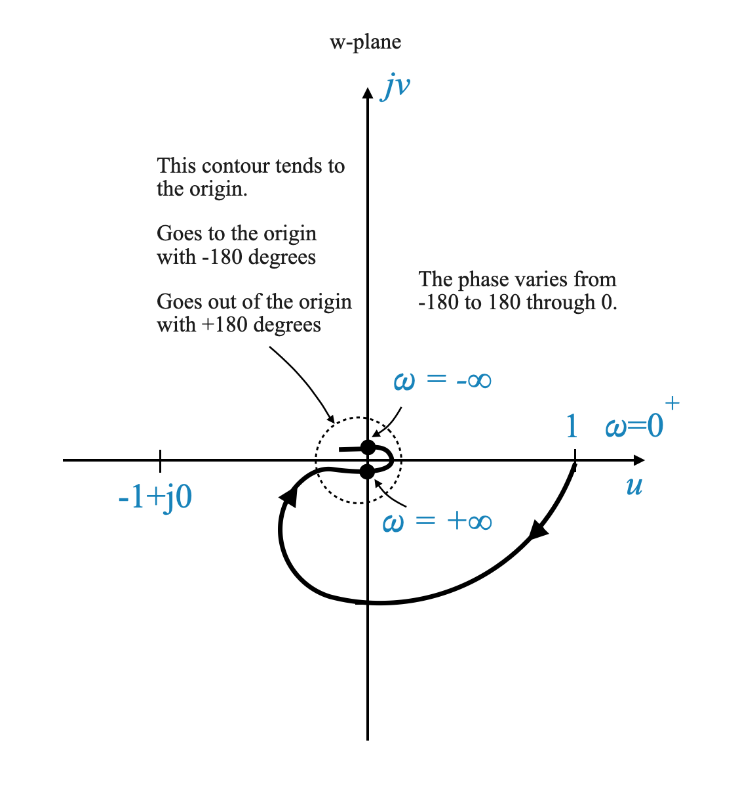 |
In questo schizzo, il modo più efficace per dimostrare il concetto è considerare come si comporta il diagramma quando $ $ si avvicina all’infinito. Interpretiamolo come segue:
- At $ = +$: Questo punto del grafico corrisponde a $ $ che tende all’infinito positivo.
- At ( = -): Allo stesso modo, un altro punto sul grafico rappresenta $ $ che si avvicina all’infinito negativo.
In questo scenario il contorno di cui stiamo discutendo tende verso l’origine del piano complesso.
Comprendere l’approccio del contorno all’origine
Avvicinamento e allontanamento: il contorno si avvicina asintoticamente all’origine con un angolo di -180 gradi e si allontana asintoticamente dall’origine con un angolo di +180 gradi.
Significato di $ $ in $ R e^{j} $: L’angolo $ $ gioca un ruolo in questa mappatura. Al variare di $ $, viene illustrato come il contorno entra ed esce dalle vicinanze dell’origine. Quando entra, il contorno lo fa in modo asintotico a -180 gradi, mentre quando esce si allontana asintoticamente a +180 gradi.
Interpretazione della mappatura: questo comportamento riflette la mappatura $ s = R e^{j} $ sul grafico di Nyquist. L’angolo $ $ influenza in modo significativo il modo in cui il grafico si avvolge attorno all’origine, descrivendo la risposta del sistema mentre la frequenza $ $ si muove attraverso un ampio intervallo.
Semplificazione del diagramma di Nyquist
Focus sui punti critici: per l’analisi della stabilità, il nostro interesse primario si trova in prossimità del punto \(-1 + j0\). La forma del grafico attorno all’origine, sebbene matematicamente intrigante, potrebbe non avere un impatto significativo sull’analisi della stabilità.
Approccio pratico: in molti scenari, l’intera mappatura del contorno attorno all’origine può essere semplificata. Possiamo considerare l’origine stessa come la mappa totale di un particolare contorno, purché siamo lontani dal punto critico \(-1 + j0\).
Analizzare l’approccio all’origine
- Comportamento asintotico: l’avvicinamento del diagramma all’origine è importante. È importante se si avvicina asintoticamente a \(-180^\circ\) o \(+180^\circ\), o in altro modo, soprattutto perché potrebbe comportare l’accerchiamento del punto \(-1\).
| 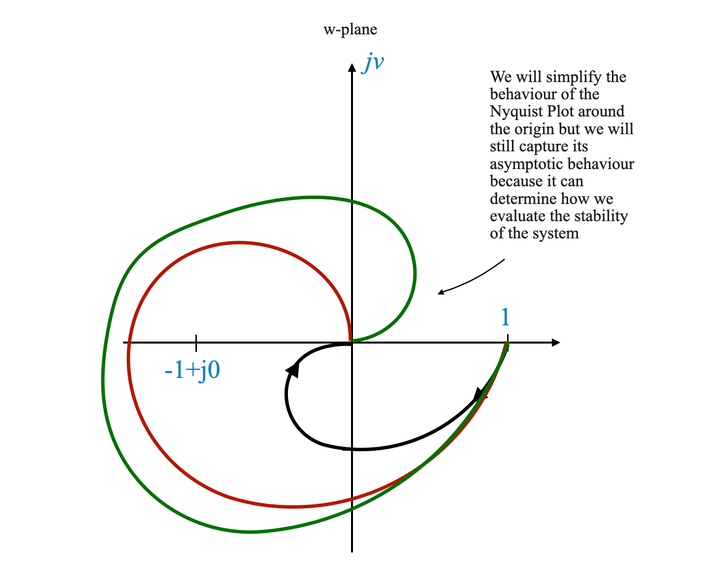 |
- Determinazione dell’asintoto: sebbene il contorno dettagliato attorno all’origine possa non essere essenziale per la stabilità, la direzione in cui il grafico si avvicina all’origine può essere davvero importante. Questa direzione, o asintoto, indica potenziali accerchiamenti del punto critico.
Domanda pop-up: Perché il diagramma polare è un passaggio importante prima di creare il diagramma di Nyquist?
Risposta: il diagramma polare ci fornisce una rappresentazione visiva della risposta in frequenza del sistema, che è un elemento fondamentale per comprendere e costruire il diagramma di Nyquist.
Transizione alla costruzione pratica del diagramma di Nyquist
Dopo aver creato il diagramma polare, che illustra la risposta in frequenza del sistema, il passo successivo è costruire il diagramma di Nyquist. Ciò si ottiene riflettendo il diagramma polare lungo l’asse reale. Il diagramma di Nyquist così formato rappresenta la mappatura dell’intero contorno di Nyquist.
È importante notare che nel contesto della risposta in frequenza, il concetto di frequenze negative (\(\omega < 0\)) doesn’t have a direct physical interpretation. Frequencies are inherently positive values. The consideration of negative \(\omega\) values in our analysis is a mathematical tool, allowing us to create a mirror image of the plot for completeness.
Visualization of the Nyquist Plot
Imagine the polar plot as a graphical representation of the system’s response to varying positive frequencies. To extend this plot to the Nyquist plot, we simply mirror the existing plot across the real axis. This mirrored portion represents what would be the system’s response if negative frequencies were physically meaningful.

|
La figura sopra mostra il diagramma polare e la sua immagine speculare per formare il diagramma di Nyquist completo dell’esempio che stiamo considerando.
Comprendere la risposta in frequenza
Il nucleo della nostra analisi dipende dalla comprensione della risposta in frequenza del sistema. Una volta che abbiamo un quadro chiaro di come il sistema risponde alle diverse frequenze (come mostrato nel diagramma polare), estendere questa comprensione al diagramma di Nyquist diventa semplice. Il diagramma di Nyquist, a sua volta, è un potente strumento per rispondere alle domande relative alla stabilità del sistema.
Domanda pop-up: Perché consideriamo le frequenze negative nel diagramma di Nyquist quando non hanno alcun significato fisico?
Risposta: Considerare le frequenze negative è un metodo matematico per garantire la completezza del diagramma di Nyquist. Aiuta a visualizzare l’intera risposta del sistema, inclusa la simmetria attorno all’asse reale, che è cruciale per l’analisi della stabilità.
Esempio 2 - Contorni passanti per singolarità
\[ G(s) = \frac{1}{s(\tau s + 1)} \]
Innanzitutto, il diagramma polare può essere ottenuto utilizzando la funzione di trasferimento sinusoidale:
\[ G(j\omega) = \frac{1}{j\omega(\tau j\omega + 1)} \]
| \(\omega = 0\) | \(\infty\angle{-90^\circ}\) |
| \(\omega = \infty\) | \(0\angle{-180^\circ}\) |
Torneremo tra poco sulla fase \(\omega = 0\).
Per calcolare le Intersezioni con asse reale e immaginario convertiamo \(G(j\omega)\) nella sua rappresentazione \(x+jy\):
\[ G(j\omega) = x+jy = \frac{-T}{1+\omega^2T^2} - j\frac{1}{\omega(1+\omega^2T^2)} \]
Da questa equazione è chiaro che non ci sono intersezioni con l’asse reale o immaginario. Se c’è un’intersezione, è per \(\omega=\infty\) che abbiamo già calcolato.
- Per \(\omega=0\) \(\rightarrow\) \(G(j0) = -T -j\infty\)
Questo ci fornisce informazioni aggiuntive. Va all’infinito lungo l’asintoto in \(-T\).
Possiamo disegnarlo:
| 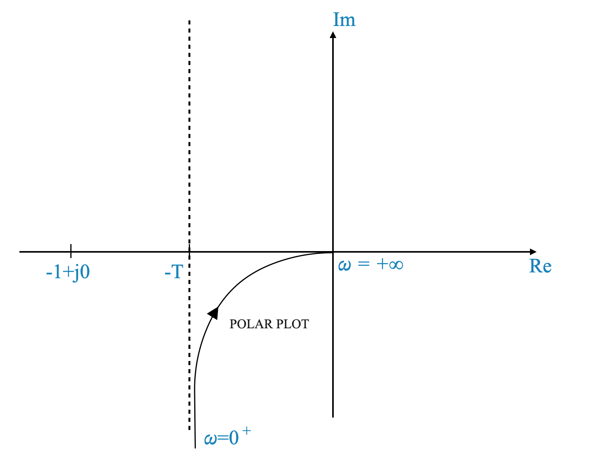 |
Questo grafico mostra anche perché per \(\omega = 0\), \(\angle{-90^\circ}\). Il comportamento asintotico e la fase mostrano la stessa informazione.
| 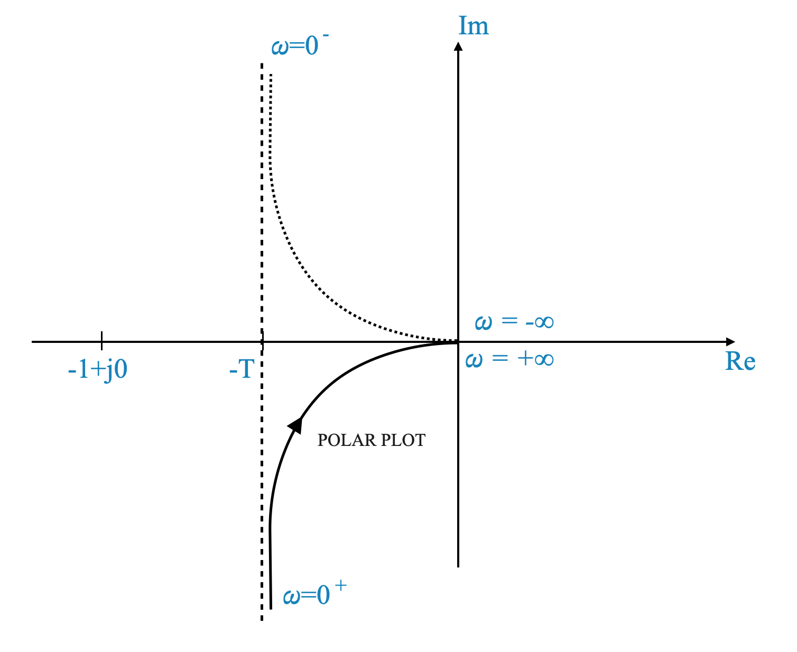 |
L’unico problema è che abbiamo un polo ad anello aperto nell’origine e la mappatura di quel punto specifico dà un valore infinito.
Affrontare i poli ad anello aperto nella costruzione del diagramma di Nyquist
Quando si ha a che fare con poli ad anello aperto situati all’origine o lungo l’asse immaginario, sono necessarie tecniche speciali per costruire il diagramma di Nyquist, poiché la mappatura diretta di questi poli dà come risultato valori infiniti.
Metodo di rientro per Nyquist Contour
Tecnica di rientro del contorno: per aggirare questa sfida, il contorno di Nyquist viene modificato rientrando attorno al palo in questione. Questo viene fatto disegnando un piccolo semicerchio di raggio $ $ adiacente al polo, con $ $ prossimo allo zero.
Motivazione alla base del rientro: questa regolazione è una misura pratica. È importante notare che avere un polo esattamente nell’origine o sull’asse immaginario rappresenta spesso una situazione idealizzata. Nei sistemi del mondo reale, tali poli sarebbero tipicamente posizionati molto vicini, ma non esattamente sul lato sinistro del piano complesso (LHP).
Implicazioni per l’analisi di stabilità: questo metodo di indentazione è una strategia matematica per semplificare il grafico di Nyquist pur mantenendo un’accurata analisi di stabilità. L’aspetto essenziale dell’analisi rimane invariato.
Modifica del contorno di Nyquist e analisi della stabilità
Direzione di deviazione: La direzione in cui il contorno viene deviato attorno al palo non costituisce un problema. Tuttavia, è fondamentale notare le implicazioni di questa deviazione sul criterio di stabilità.
Inclusione di pali nel contorno di Nyquist: se la deviazione include un palo ad anello aperto all’interno del contorno di Nyquist, questo deve essere tenuto in considerazione nell’analisi di stabilità. Il polo racchiuso contribuisce al conteggio di $ P $ nel criterio di stabilità di Nyquist, formulato come $ N = P - Z $.
Risultati coerenti in termini di stabilità: indipendentemente dalla direzione della deviazione, la valutazione risultante della stabilità a circuito chiuso rimane coerente. Ciò che cambia è il valore specifico di $ N $ ottenuto nel criterio di Nyquist, mentre la conclusione complessiva sulla stabilità del sistema rimane la stessa.
Applicando attentamente la tecnica di indentazione e considerando in modo appropriato gli effetti della deviazione sul criterio di stabilità di Nyquist, possiamo garantire un’analisi di stabilità robusta e accurata per sistemi di controllo con poli ad anello aperto sopra o vicino all’asse immaginario.
Vediamo come funziona con il nostro esempio:
Per comprendere la mappatura del diagramma di Nyquist attorno ad un polo ad anello aperto, in particolare quando il polo è all’origine o sull’asse immaginario, consideriamo il percorso semicircolare definito da:
\[ s = \epsilon e^{j\theta} \]
Qui, $ $ varia da $ -90^$ a \(0^\circ\) fino a \(+90^\circ\), tracciando effettivamente un semicerchio nel piano complesso.
Sostituendo questa espressione nella funzione di trasferimento, abbiamo:
\[ G(s)H(s) = \frac{K}{\epsilon e^{j\theta}(T \epsilon e^{j\theta} + 1)} \]
Dato il piccolo valore di $ $ (vicino allo zero), questa espressione può essere approssimata come:
\[ G(s)H(s) = \frac{K}{\epsilon e^{j\theta}} \]
Semplificando ulteriormente, otteniamo:
\[ G(s)H(s) = \frac{K}{\epsilon} e^{-j\theta} \]
Questa approssimazione porta a due importanti osservazioni sulla funzione di trasferimento mentre ci muoviamo lungo il semicerchio:
Grandezza: La grandezza della funzione di trasferimento tende all’infinito. Ciò è dovuto alla presenza di $ $ al denominatore, che si avvicina allo zero, facendo tendere l’espressione complessiva verso l’infinito.
Angolo: l’angolo cambia da $ +90^$ attraverso $ 0^$ fino a $ -90^$. Questo cambiamento di angolo è fondamentale poiché riflette lo spostamento di fase che si verifica mentre ci muoviamo attorno al semicerchio.
| 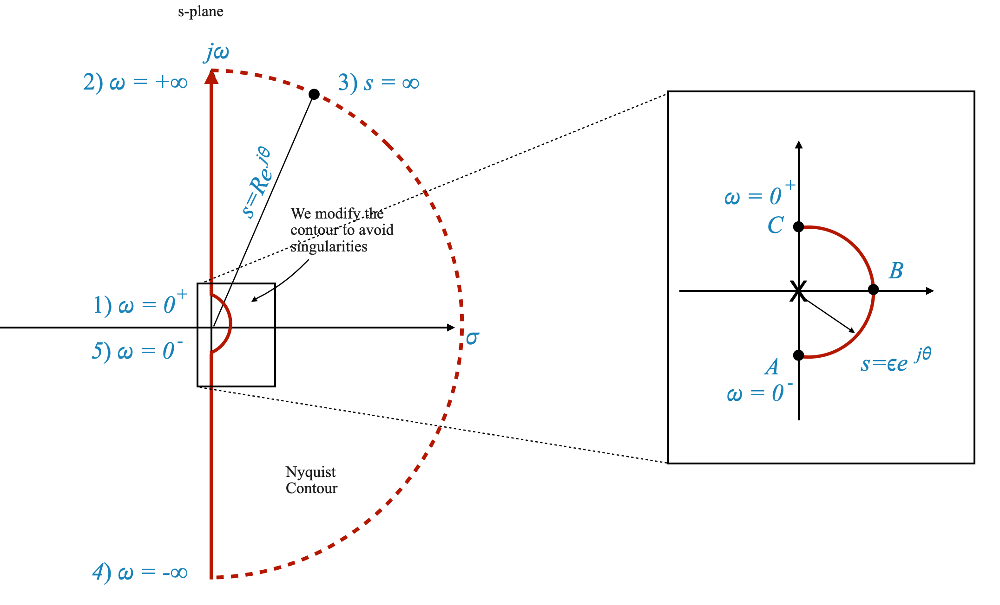 | 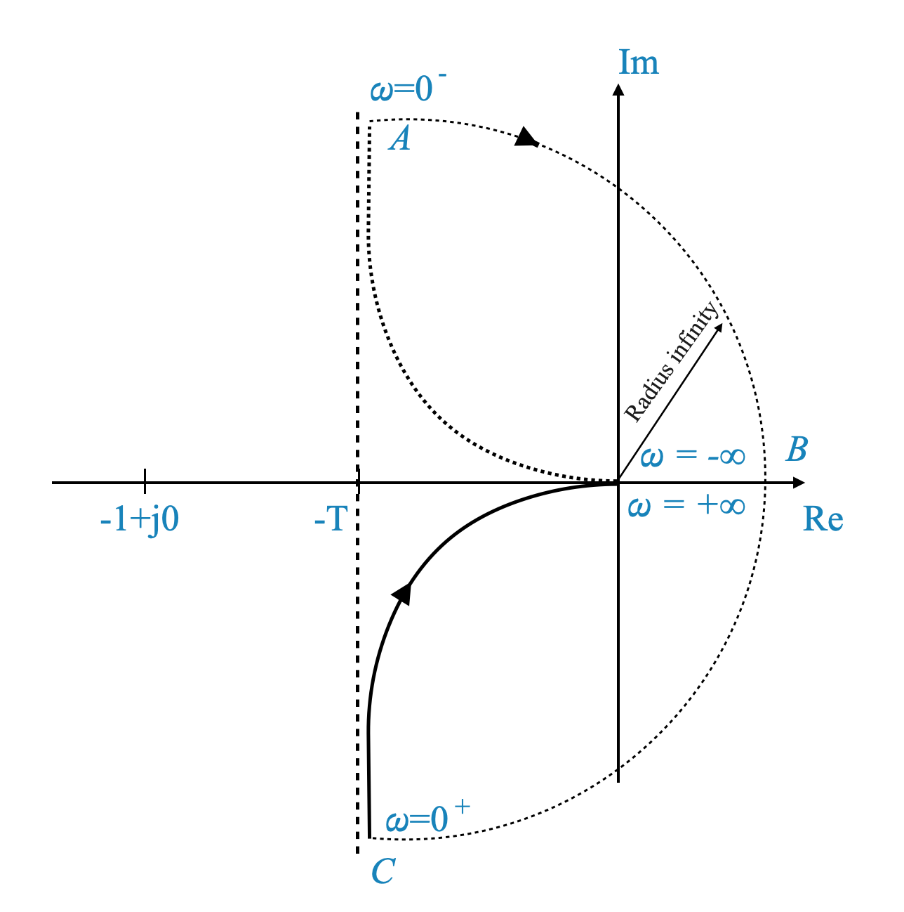 |
La stabilità di un sistema nel contesto del criterio di Nyquist è determinata dal fatto che il suo diagramma di Nyquist circondi il punto critico (-1 + j0). Per il sistema dato:
\[ G(s) = \frac{K}{s(sT+1)} \]
possiamo analizzare la sua stabilità in base al comportamento del diagramma di Nyquist.
Analisi di stabilità basata sul diagramma di Nyquist
Assenza di accerchiamento del punto \(-1\): Il sistema è considerato stabile se il diagramma di Nyquist non circonda il punto \(-1\) sul piano complesso. In questo caso, il diagramma di Nyquist del sistema non si aggira mai intorno al punto \(-1\), il che significa che il sistema è stabile.
Effetto dell’aumento di \(K\): all’aumentare del guadagno \(K\), aumenta l’entità della risposta del sistema. Tuttavia, questo aumento di grandezza non porta ad un accerchiamento del punto \(-1\). Pertanto, anche con valori più elevati di \(K\), il grafico di Nyquist rimane lontano dal punto \(-1\).
Conclusione sulla stabilità
- Stabilità per tutti i valori di (K): Dato il comportamento del diagramma di Nyquist per questo sistema, si può concludere che il sistema è stabile per tutti i valori di (K). Questa conclusione si trae dal fatto che non ci sono accerchiamenti del punto critico (-1), indipendentemente dal guadagno (K).
La stabilità del sistema, analizzata attraverso il criterio di Nyquist, non è quindi influenzata dalle variazioni di \(K\), rendendolo stabile in un intervallo di valori di guadagno.
| 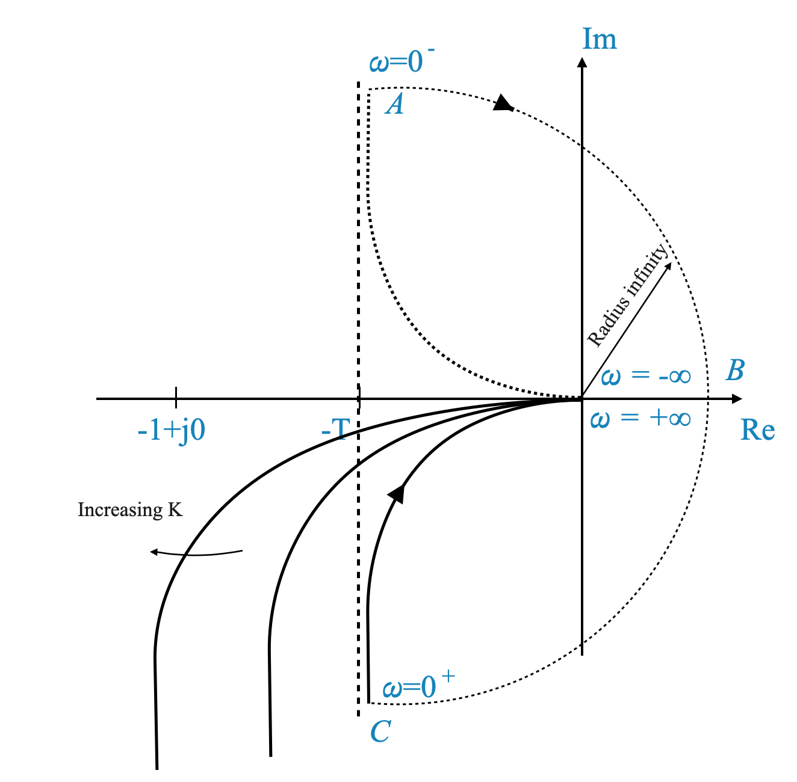 |
Esempio 3
\[ G(s)H(s) = \frac{4s + 1}{s^2(s + 1)(2s + 1)} \]
Analizziamo questa funzione per comprenderne le implicazioni per la stabilità del sistema utilizzando il criterio di stabilità di Nyquist.
Valutazione dei punti chiave del diagramma di Nyquist
Per questa funzione di trasferimento, il diagramma di Nyquist viene costruito valutando quanto segue:
\[ G(j\omega)H(s) = \frac{4j\omega + 1}{(j\omega)^2(j\omega + 1)(2j\omega + 1)} \]
A $ = 0 $: la funzione di trasferimento diventa $ ^$. Ciò suggerisce che il diagramma inizia dall’infinito sull’asse reale negativo.
At $ = $: Semplificando, troviamo che l’angolo è $ 0 ^$ o equivalentemente $ 0 ^$.
Intersezioni con l’asse immaginario
Convertire la funzione di trasferimento in una forma vettoriale $ x + jy $ ci permette di trovare intersezioni con l’asse immaginario. Tuttavia, per questa particolare funzione di trasferimento, non ci sono intersezioni tranne che in $ = 0 $ e $ = $.
Costruzione del diagramma di Nyquist
| 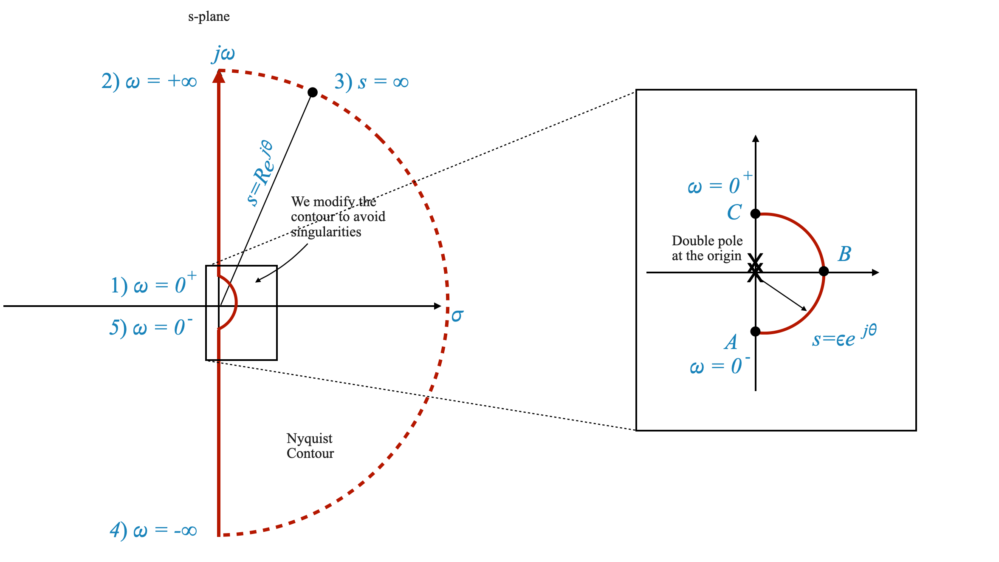 |

|
- Considerazione sull’origine: La presenza di un doppio polo all’origine richiede particolare attenzione. Aggiriamo questo polo utilizzando un semicerchio di raggio infinitesimo $ $.
- Mappatura del semiciclo: la mappatura di questo semicerchio, rappresentato come $ e^{j} $, risulta in un grafico che si estende da $ +180^$ a $ -180^ circ$ con raggio infinito.
Come prima, per comprendere la mappatura del diagramma di Nyquist attorno ai due poli ad anello aperto nell’origine, consideriamo il percorso semicircolare definito da:
\[ s = \epsilon e^{j\theta} \]
Qui, $ $ varia da $ -90^$ a \(0^\circ\) fino a \(+90^\circ\), tracciando effettivamente un semicerchio nel piano complesso.
Sostituendo questa espressione nella funzione di trasferimento, otteniamo che possiamo approssimare \(G(s)H(s)\) come:
\[ G(s)H(s) = \frac{1}{s^2} \]
Dato il piccolo valore di $ $ (vicino allo zero), questa espressione può essere approssimata come:
\[ G(s)H(s) = \frac{1}{\epsilon e^{2j\theta}} \]
E semplificando ulteriormente, otteniamo:
\[ G(s)H(s) = \frac{K}{\epsilon} e^{-j2\theta} \]
e l’angolo va da \(+180^\circ\) a \(-180^\circ\), mentre \(\theta\) va da \(-90^\circ\) a \(90^\circ\).
Analisi di stabilità basata sul criterio di Nyquist
- Impatto del guadagno del sistema ($ K $): Variazione di $ K $ nel sistema
\[ G(s)H(s) = K \frac{4s + 1}{s^2(s + 1)(2s + 1)} \]
influenza la grandezza del diagramma di Nyquist. Ciò potrebbe portare all’accerchiamento del punto \(-1\) e la stabilità del sistema dipende dal valore specifico di \(K\).

|

|